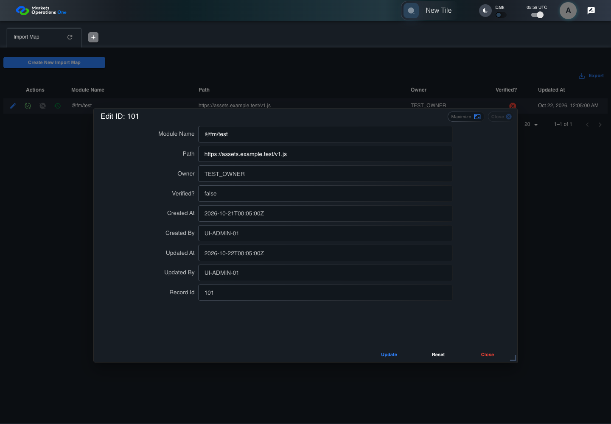

UI-ADM-MAP-013 actual administration UI with step evidence
PASS · application/run-050/ui-adm-map-013-actual-administration-ui-with-step-evidence-03d293836292-attempt-1 · ACTUAL_APPLICATION_LOCAL_SERVICES
Actual current React administration screens. Controlled browser login supplies UI-ADMIN-01 and TEST_OWNER, or the declared SUPER_USER. Controlled BFF routes return the case-declared records. Other controlled saves persist submitted field values. This run establishes frontend handling only. It does not execute BFF validation, storage, audit generation, or authorization.
2026-10-22T05:59:40.920Z to 2026-10-22T05:59:44.142Z
Assertions and result · Artifact manifest · Exact run inputs and source hashes
Result SHA-256:5aefb58e23ec7ec77f1ff5bc81e01f8b224ee3145a24dd5f28ebf0b22179bb02Machine observations
- ui-origin-admin-requests.json
975b67ed1d448d986d7c94dd2eb25427e26ffc926da4e002e8bf040869335300
Screenshot capture: CAPTURED. Named frames: 10.
Step screenshot evidence: COMPLETE. 9/9 canonical steps have execution screenshots.
Canonical step timeline
Given Admin A is authenticated as fixture UI-ADMIN-01 with the case-specific permissions
Execution: PASSED.
1. step-01 Visible state after step 1: Given Admin A is authenticated as fixture UI-ADMIN-01 with the case-specific permissions
2026-10-22T05:59:42.242Z · 1440×1000
Step: /Users/lushevol/code/github/ratan-release-impact/workbench/tasks/ui-test-coverage-20261022/test-cases.md:8539
SHA-256:e3b0f9fc19565c05531c6efe10482168b9bbf39577aa6c46d3b54491467406f9And the Import Map admin screen is open for UI-ADMIN-01; fixture record 101 is inactive and has Path https://assets.example.test/v1.js; its owner is TEST_OWNER
Execution: PASSED.
2. step-02 Visible state after step 2: And the Import Map admin screen is open for UI-ADMIN-01; fixture record 101 is inactive and has Path https://assets.example.test/v1.js; its owner is TEST_OWNER
2026-10-22T05:59:43.089Z · 1440×1000
Step: /Users/lushevol/code/github/ratan-release-impact/workbench/tasks/ui-test-coverage-20261022/test-cases.md:8540
SHA-256:8c5c1415a703219dbc7fa910fa08faeb5601d93a8f6d45681b924839af490a8fWhen Admin A clicks icon button named "Edit" inside row with Record Id "101" in the "Import Map" administration data grid
Execution: PASSED.
3. step-03 Visible state after step 3: When Admin A clicks icon button named "Edit" inside row with Record Id "101" in the "Import Map" administration data grid
2026-10-22T05:59:43.293Z · 1440×1000
Step: /Users/lushevol/code/github/ratan-release-impact/workbench/tasks/ui-test-coverage-20261022/test-cases.md:8541
SHA-256:aa4c0569ff87b963cc773d74f28fe1273df8bf6ce41cd2c3b08b5f8b47cc6f40Then textbox named "Record Id" inside the dialog named "edit ID: 101" inside the "Import Map" administration tabpanel is disabled
Execution: PASSED.
4. step-04 Visible state after step 4: Then textbox named "Record Id" inside the dialog named "edit ID: 101" inside the "Import Map" administration tabpanel is disabled
2026-10-22T05:59:43.371Z · 1440×1000
Step: /Users/lushevol/code/github/ratan-release-impact/workbench/tasks/ui-test-coverage-20261022/test-cases.md:8542
SHA-256:0c2e86e3fcfe355fb4d8249c61cb75370f87e04d35c37cb8126934c8c0aa1237And textbox named "Created At" inside the dialog named "edit ID: 101" inside the "Import Map" administration tabpanel is disabled
Execution: PASSED.
5. step-05 Visible state after step 5: And textbox named "Created At" inside the dialog named "edit ID: 101" inside the "Import Map" administration tabpanel is disabled
2026-10-22T05:59:43.434Z · 1440×1000
Step: /Users/lushevol/code/github/ratan-release-impact/workbench/tasks/ui-test-coverage-20261022/test-cases.md:8543
SHA-256:0c2e86e3fcfe355fb4d8249c61cb75370f87e04d35c37cb8126934c8c0aa1237And textbox named "Created By" inside the dialog named "edit ID: 101" inside the "Import Map" administration tabpanel is disabled
Execution: PASSED.
6. step-06 Visible state after step 6: And textbox named "Created By" inside the dialog named "edit ID: 101" inside the "Import Map" administration tabpanel is disabled
2026-10-22T05:59:43.503Z · 1440×1000
Step: /Users/lushevol/code/github/ratan-release-impact/workbench/tasks/ui-test-coverage-20261022/test-cases.md:8544
SHA-256:0c2e86e3fcfe355fb4d8249c61cb75370f87e04d35c37cb8126934c8c0aa1237And textbox named "Updated At" inside the dialog named "edit ID: 101" inside the "Import Map" administration tabpanel is disabled
Execution: PASSED.
7. step-07 Visible state after step 7: And textbox named "Updated At" inside the dialog named "edit ID: 101" inside the "Import Map" administration tabpanel is disabled
2026-10-22T05:59:43.582Z · 1440×1000
Step: /Users/lushevol/code/github/ratan-release-impact/workbench/tasks/ui-test-coverage-20261022/test-cases.md:8545
SHA-256:0c2e86e3fcfe355fb4d8249c61cb75370f87e04d35c37cb8126934c8c0aa1237And textbox named "Updated By" inside the dialog named "edit ID: 101" inside the "Import Map" administration tabpanel is disabled
Execution: PASSED.8. step-08 Visible state after step 8: And textbox named "Updated By" inside the dialog named "edit ID: 101" inside the "Import Map" administration tabpanel is disabled
2026-10-22T05:59:43.638Z · 1440×1000
Step: /Users/lushevol/code/github/ratan-release-impact/workbench/tasks/ui-test-coverage-20261022/test-cases.md:8546
SHA-256:622d1c3d7dd7d5fb44b0769cbfbadd31e83f3a58445e564d884e5f02e7d44f38And textbox named "Verified?" inside the dialog named "edit ID: 101" inside the "Import Map" administration tabpanel is disabled
Execution: PASSED.
9. step-09 Visible state after step 9: And textbox named "Verified?" inside the dialog named "edit ID: 101" inside the "Import Map" administration tabpanel is disabled
2026-10-22T05:59:43.721Z · 1440×1000
Step: /Users/lushevol/code/github/ratan-release-impact/workbench/tasks/ui-test-coverage-20261022/test-cases.md:8547
SHA-256:622d1c3d7dd7d5fb44b0769cbfbadd31e83f3a58445e564d884e5f02e7d44f38
Additional named frames

The final visible state after the named test assertions.
2026-10-22T05:59:43.842Z · 1440×1000Step: Test source: /Users/lushevol/code/github/ratan-release-impact/workbench/e2e/audit-specs/admin-expanded.spec.ts:15
SHA-256:
622d1c3d7dd7d5fb44b0769cbfbadd31e83f3a58445e564d884e5f02e7d44f38Screenshots establish visible state only. Assertions and traces support functional claims.